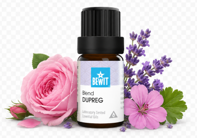

Těhotenství je jedinečné a každá žena ho prožívá jinak. Esence jsou jemnou podporou — vždy se poraďte s lékařem o vhodnosti konkrétních olejů ve vašem trimestru. Naslouchejte svému tělu. Výsledky přicházejí s pravidelností — dopřejte si čas.

pro klidné a harmonické těhotenství
Těhotenská nevolnost, emoční výkyvy, napětí nebo touha podpořit přirozené plodnost. Ukáži vám, které jemné esence jsou vhodné v tomto citlivém období a jak vám mohou přinést klid a pohodu.
Těhotenství

Jemná a bezpečná směs vytvořená přímo pro podporu v těhotenství.
Uklidňuje tělo i mysl, pomáhá s napětím, přecitlivělostí a emočními výkyvy.
💧 Jak použít: zředěný v nosném oleji (např. mandlový) naneste na zápěstí nebo solar plexus — lze přidat 3–5 kapek i do difuzéru. Vhodná po celou dobu těhotenství.
Zjistit více →💧 Jak použít: přidejte 2–3 kapky do difuzéru nebo zředěnou v nosném oleji naneste na solar plexus a zápěstí.
Chci ulevit od nevolnosti💧 Jak použít: přidejte 3 kapky do difuzéru a nechte vůni jemně působit.
Chci klid💧 Jak použít: přidejte 3–5 kapek do difuzéru nebo zředěný v nosném oleji naneste na solar plexus a spodní břicho.
Chci se propojitTěhotenství je jedinečné a každá žena ho prožívá jinak. Esence jsou jemnou podporou — vždy se poraďte s lékařem o vhodnosti konkrétních olejů ve vašem trimestru. Naslouchejte svému tělu. Výsledky přicházejí s pravidelností — dopřejte si čas.
Mohlo by vás také zajímat:
🌿 Všechny esence, které na tomto webu doporučuji, jsou od BEWIT. Jako registrovaný zákazník můžete nakupovat se slevou až 50 % na vybrané produkty.
Registrace u BEWIT zdarma →